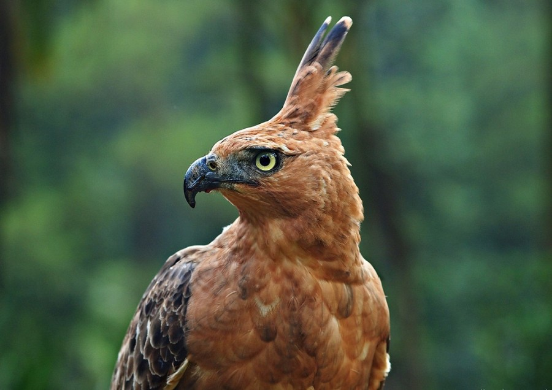

Burung Elang ini mempunyai bentuk yang sangat gagah, namun sangat disayangkan populasinya kini tinggal 250 ekor saja. Keberadaannya hampir tersebar merata di sekitar hutan di pulau Jawa seperti gunung Anjasmoro, gunung Kawi, gunung Salak, gunung Slamet dan masih banyak lagi yang lainnya. Selain di gunung-gunung, hewan ini juga terdapat dibeberapa taman nasional yang ada di Jawa seperti Taman nasional Gunung Gede Pangrango serta Taman Nasional Muara Betiri.